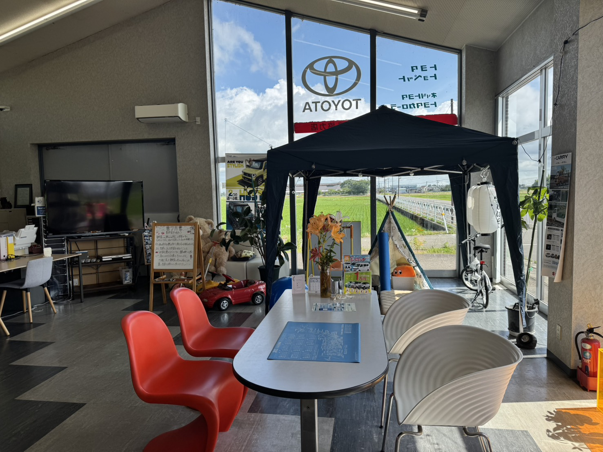
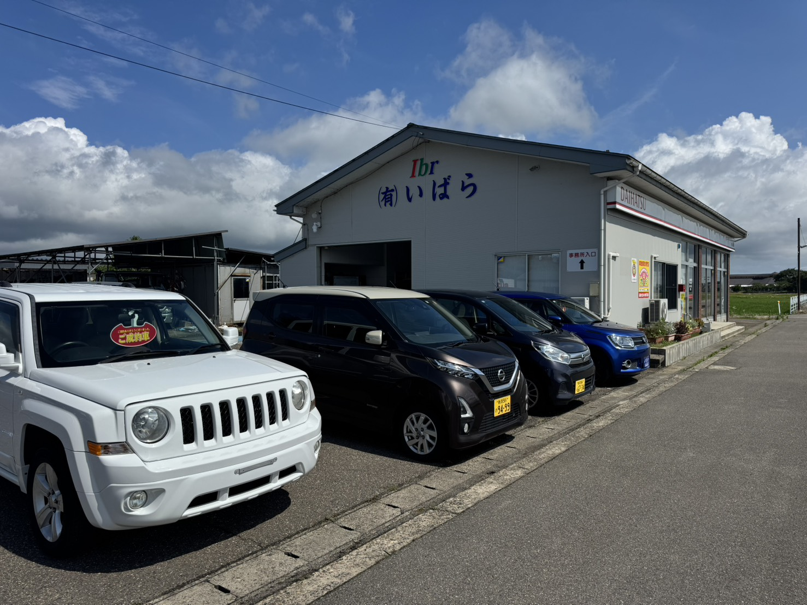

お車探しのご相談から、ご提案、ご契約、点検整備、ご納車、そしてその後のお付き合いまで。私たちがどのようにお手伝いするのかを、順を追ってご説明します。

UNITED CARS は在庫を持たない「お車探し専門店」です。展示場に並んだ車からお選びいただくのではなく、まずご希望をうかがい、そのうえで全国131の提携オークション会場から条件に合う一台をお探しします。そのため、一般的な中古車店とは進み方が少し異なります。
ご相談をいただいてからご納車まで、おおよそ6つのステップに分かれます。それぞれの段階で「いま何をしているのか」「次に何が必要なのか」をお伝えしながら進めますので、車の購入がはじめての方でもご安心ください。
途中で「やっぱりもう少し考えたい」と思われた場合は、遠慮なくそうおっしゃってください。ご契約前であれば、いつでも立ち止まっていただけます。無理におすすめすることはありません。
お車の条件やオークションの出品状況によって前後することはありますが、基本的な流れは次のとおりです。
まずはお電話、LINE、またはご来店でお声がけください。「そろそろ車を替えたい」「維持費を抑えたい」といった漠然としたご相談の段階で結構です。車種が決まっていなくても、まったく問題ありません。店内は田園を望むカフェのような雰囲気で、キッズスペースもございますので、お子さま連れでも落ち着いてお話しいただけます。ご予約なしでもご来店いただけますが、事前にお電話をいただけますと、担当がお待ちしてよりスムーズにご案内できます。
お客様にご用意いただくもの：とくにありません。気になっている車種のカタログやチラシ、現在お乗りのお車の車検証をお持ちいただけると、話が早く進みます。
所要期間の目安：ご相談は30分〜1時間程度です。
ご予算、ご希望のボディタイプ、乗車人数、主な使い方、駐車場の広さ、譲れない装備などをうかがいます。「冬道が不安なので4WDがいい」「子どもの乗り降りがあるのでスライドドアがほしい」といった暮らしのご事情こそ、遠慮なくお聞かせください。
そのうえで、条件に合いそうな車種やグレードをいくつかご提案します。ご予算と条件がうまく重ならない場合は、どこを優先し、どこを譲るとバランスが取れるのかを一緒に考えます。車両本体価格だけでなく、税金・保険・燃費といった維持費まで含めて見通しをお伝えしますので、購入後の生活もイメージしていただけます。
お客様にご用意いただくもの：おおよそのご予算、お住まいの駐車環境がわかる情報。
所要期間の目安：1回のご相談で決まることもあれば、数日かけてじっくり検討される方もいらっしゃいます。
ご希望の条件が固まりましたら、全国131の提携オークション会場から該当するお車を探します。オークションでは車両の状態を評価した検査票が付いていますので、修復歴の有無、外装の傷み具合、内装の状態などを確認しながら、おすすめできる個体かどうかを整備の目線で見極めます。
候補が見つかりましたら、車両情報とあわせてお見積りをお出しします。車両価格だけでなく、登録にかかる諸費用、税金、自賠責保険、必要な整備費用まで含めた「お支払い総額」でご提示しますので、あとから金額が大きく変わることはありません。ご不明な項目があれば、その場で何度でもご質問ください。
お客様にご用意いただくもの：とくにありません。
所要期間の目安：ご希望の条件によりますが、数日〜数週間ほど。条件が絞り込まれているほど、お待ちいただく場合があります。
お見積りの内容にご納得いただけましたら、ご契約の手続きに進みます。契約書の内容、お支払い方法、ご納車の時期、保証の内容について、ひとつずつご説明します。疑問が残ったままご署名いただくことのないよう、確認のお時間は十分にお取りします。
オートローンをご利用の場合は、この段階で審査のお手続きを行います。必要書類をご案内しますので、ご準備をお願いします。落札を伴うお車探しの場合は、ご希望条件と上限予算を確定させたうえで進めます。
お客様にご用意いただくもの：印鑑、本人確認書類、住民票や印鑑証明書など（下の一覧をご覧ください）。
所要期間の目安：手続き自体は1時間程度。書類のご準備に数日いただくことがあります。
お車が入庫しましたら、自社認証工場で点検整備を行います。消耗品の状態を確認し、必要に応じて交換したうえでお渡しします。外装に気になる箇所があれば、鈑金塗装ブースで仕上げることもできます。ここは、整備を本業としてきた㈲いばらが母体だからこそ力を入れている工程です。
あわせて、名義変更や登録などの手続きを進めます。すべて整いましたら、日程を調整のうえご納車です。ご納車時には、装備の使い方、次回の点検時期、保証の内容についてご説明します。ご希望に応じてご自宅までお届けすることも可能ですので、ご相談ください。
お客様にご用意いただくもの：車庫証明に必要な書類、任意保険の切り替えのご手配。
所要期間の目安：ご契約から納車まで、おおむね2週間〜1ヶ月程度が目安です。
ご納車がゴールではありません。車検、法定点検、オイル交換などの日常整備、冬用タイヤの交換、万一のキズやへこみの修理まで、同じ場所で続けてお引き受けします。保証制度や各種保険のご相談も承ります。
バッテリーが上がった、走行中に異音がする、といった急なお困りごとにも、地域密着ならではの小回りで対応します。「JAFより早く駆けつける」——それが私たちの心がけです。次に乗り換えをお考えになるときも、下取り・買取まで含めてご相談いただけます。
お客様にご用意いただくもの：点検・車検の際は車検証をお持ちください。
所要期間の目安：末永く、お付き合いさせていただきます。
一般的に必要とされる書類をまとめました。お車やお客様のご事情によって異なる場合がありますので、詳しくはご契約時にご案内します。
| 書類 | 普通自動車 | 軽自動車 | 備考 |
|---|---|---|---|
| 印鑑登録証明書 | 一般的に必要です | 原則不要とされています | 発行から一定期間内のものが求められます |
| 実印／認印 | 実印が一般的です | 認印で足りることが多いです | お手続きの内容により異なります |
| 車庫証明（保管場所証明書） | 一般的に必要です | 地域により必要です | お住まいの地域によって扱いが異なります |
| 住民票 | 場合により必要です | 場合により必要です | お住まいの変更がある場合など |
| 本人確認書類 | ご提示をお願いします | ご提示をお願いします | 運転免許証など |
| 現在お乗りのお車の車検証 | 下取り・買取時に必要です | 下取り・買取時に必要です | 乗り換えの場合 |
| 自動車税の納税証明書 | 下取り・買取時にご用意ください | 下取り・買取時にご用意ください | 乗り換えの場合 |
※ 上記は一般的な例です。必要書類は制度の改正やお客様のご事情、お車の登録内容によって変わることがあります。車庫証明の取得など、お手続きの代行も承っておりますので、書類まわりに不安がある方はお気軽にご相談ください。
現金一括と、各種オートローンをお取り扱いしています。無理のないご計画を一緒に考えます。
お見積りでご提示したお支払い総額を、ご納車前にお振り込みまたはご持参いただく方法です。金利がかからないぶん、総支払額を抑えられます。お振り込みのタイミングは、ご都合にあわせてご相談ください。
各種オートローンをお取り扱いしています。月々のご負担額から逆算して、ご予算の目安を考えることもできます。ご利用には審査がございますので、まずはご希望の回数やお支払い額をお聞かせください。
頭金を入れる／入れない、支払回数を長くする／短くするといった組み合わせで、月々のご負担は大きく変わります。「毎月このくらいなら無理がない」という金額を起点に、車種選びから調整することも可能です。
現在お乗りのお車を下取り・買取に出し、その分をご購入資金に充てることもできます。査定は無料で、ご希望に応じて出張査定にもうかがいます。
※ オートローンのご利用には所定の審査がございます。金利や回数などの詳しい条件は、お見積りの際にご案内します。

いま乗っているお車を手放して乗り換える場合は、お車探しと並行して査定を進めます。グループのUnited Square㈱が買取・無料出張査定を担当しますので、別のお店に持ち込んでいただく手間はありません。ご来店が難しい場合は、ご自宅や職場までうかがって査定いたします。
査定額をお出ししたうえで、ご購入予定のお車のお見積りと合算し、実際のご負担額をご提示します。査定額がご期待に届かない場合は、無理に下取りに出していただく必要はありません。他の方法をご検討いただいて構いませんし、そのままお乗り続けになるという選択も、もちろんあります。
お引き渡しのタイミングは、新しいお車のご納車日にあわせて調整します。乗るお車がない期間が生じないよう配慮しますので、通勤などで毎日お使いの方もご安心ください。手続きに必要な書類は、事前に一覧でご案内します。
「何から始めればいいのかわからない」という方こそ、お気軽にご相談ください。順を追ってご案内します。
📞 0256-86-2944 受付 8:30-18:30